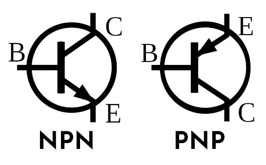

bipolar junction transistors

BJT symbols by Dave Astels (CC BY-SA) modified to add the component names
These components have three pins: base, collector and emitter. A little current flowing between the base and the emitter causes a larger current to flow between the collecter and the emitter. This means they can be used to amplify a signal, or as switches (cutoff and saturation states).
There are two types of BJT:
- NPN: current flows from base to emitter
- PNP: current flows from emitter to base